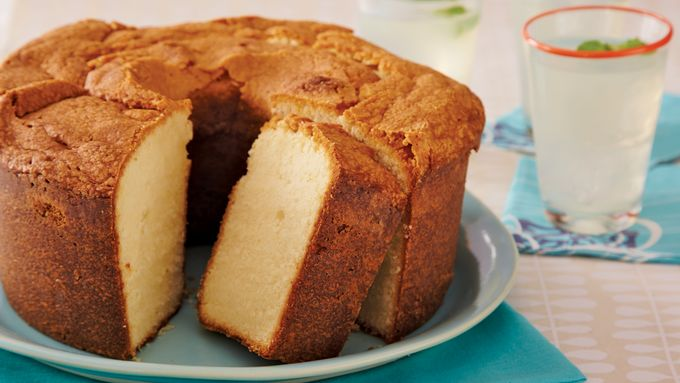

Pound Cake

Description
Pound cake doesn’t have to be complicated. This recipe calls for basic ingredients that you most likely have in your pantry.
Bake this cake in an angel food or fluted tube cake pan, dust it with powdered sugar and voila, you have a perfect dessert!
Ingredients
- 3 cups all-purpose flour
- 1 teaspoon baking powder
- 1/4 teaspoon salt
- 2 1/2 cups sugar
- 1 cup butter or margarine, softened
- 1 teaspoon vanilla or almond extract
- 5 large eggs
- 1 cup milk or evaporated milk
- Powdered sugar, if desired
Steps
- Heat oven to 350°F. Grease bottom, side and tube of 10x4-inch angel food cake pan (tube pan), 12-cup fluted tube cake pan or two 9x5-inch loaf pans with shortening; lightly flour.
- In medium bowl, mix flour, baking powder and salt; set aside. In large bowl, beat granulated sugar, butter, vanilla and eggs with electric mixer on low speed 30 seconds, scraping bowl constantly. Beat on high speed 5 minutes, scraping bowl occasionally. Beat flour mixture into sugar mixture alternately with milk on low speed, beating just until smooth after each addition. Pour into pan(s).
- Bake angel food or fluted tube cake pan 1 hour 10 minutes to 1 hour 20 minutes, loaf pans 55 to 60 minutes, or until toothpick inserted in center comes out clean. Cool 20 minutes; remove from pan(s) to wire rack. Cool completely, about 2 hours. Sprinkle with powdered sugar.